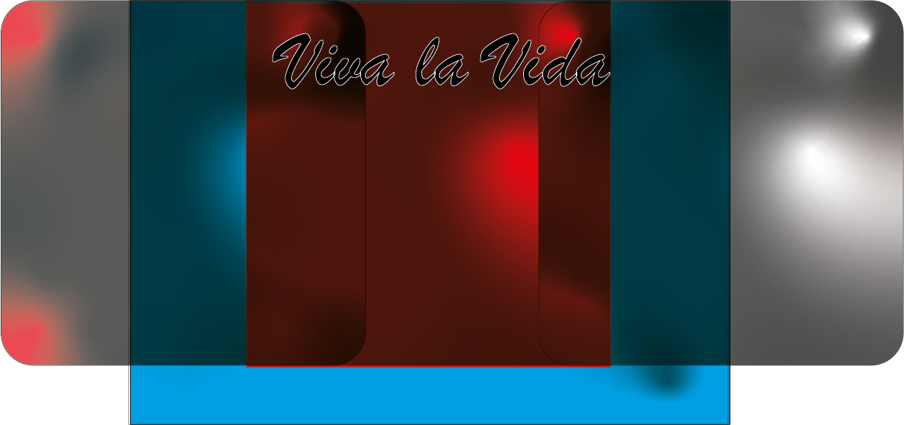

Vormgeving 2
Voor het vak vormgeving 2 moest in een nummer vormgeven op basis van gevoel. Ik heb gekozen voor het nummer viva la vida van Coldplay. Hiervoor hebben we eerst inspiratie moeten zoeken van buiten af waarna we het nummer moesten vormgeven. Viva la Vida is een nummer wat gaat over een koninng eerst magtig is en die gevallen in glory. Ik heb hierom ook veel gebruik gemaakt van positiefe en negatiefe/donkere kleuren.
